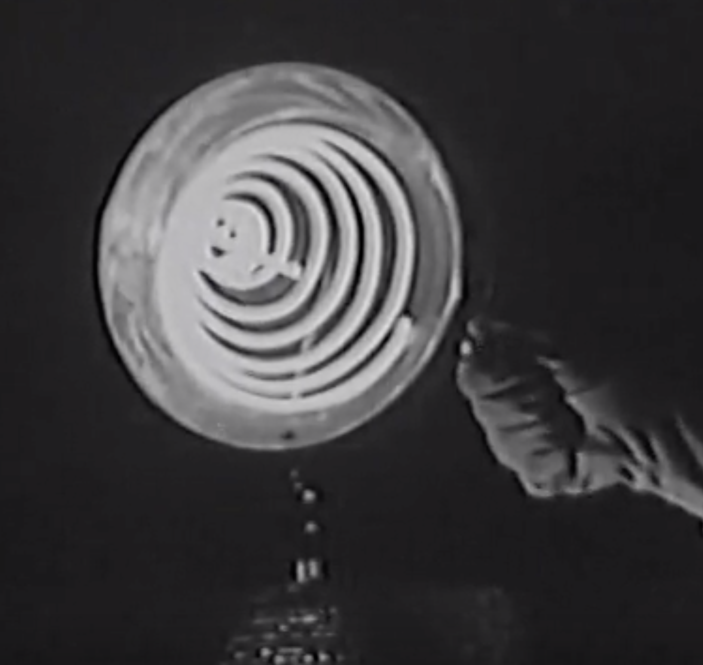
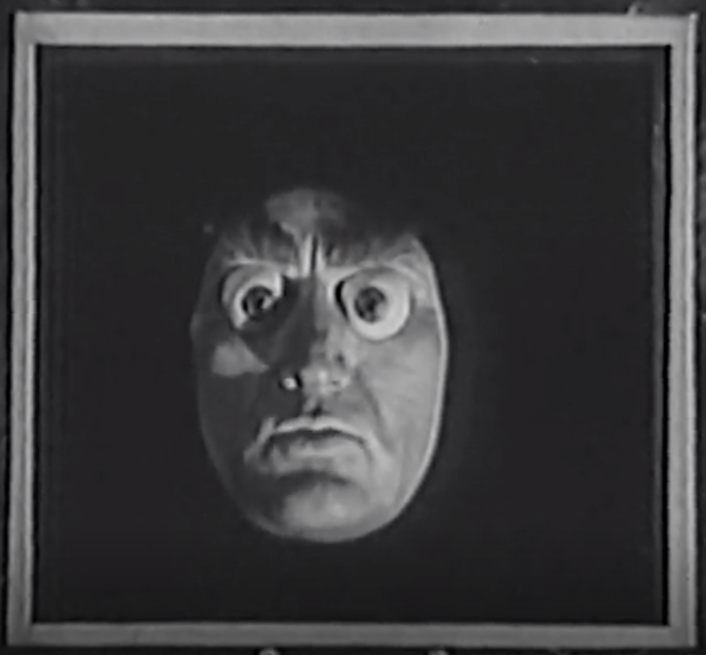
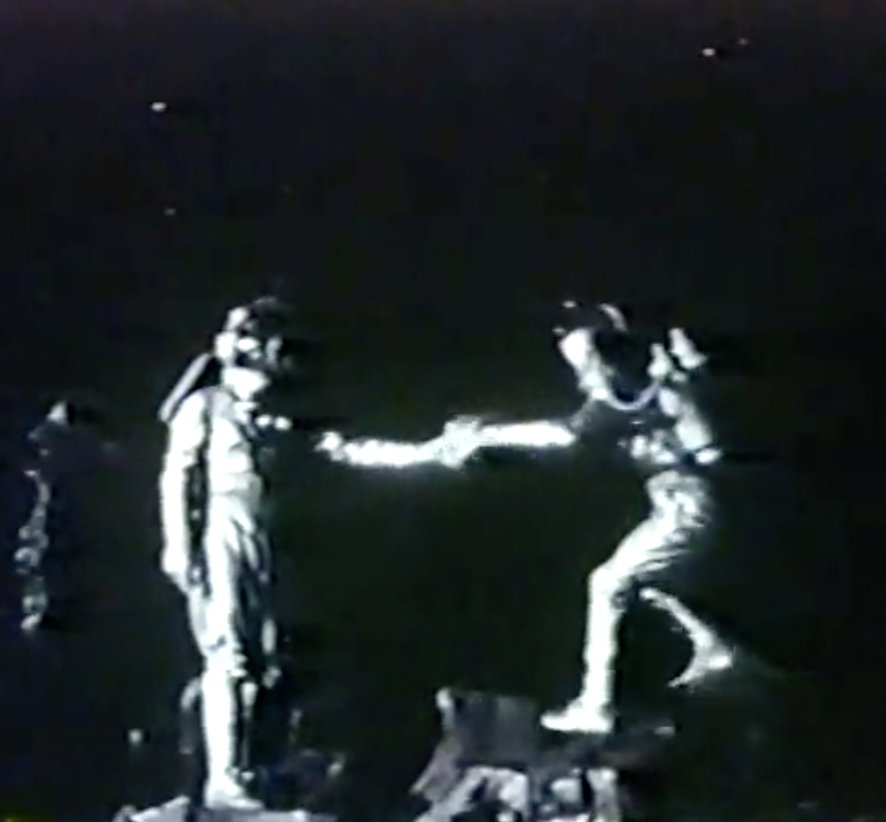
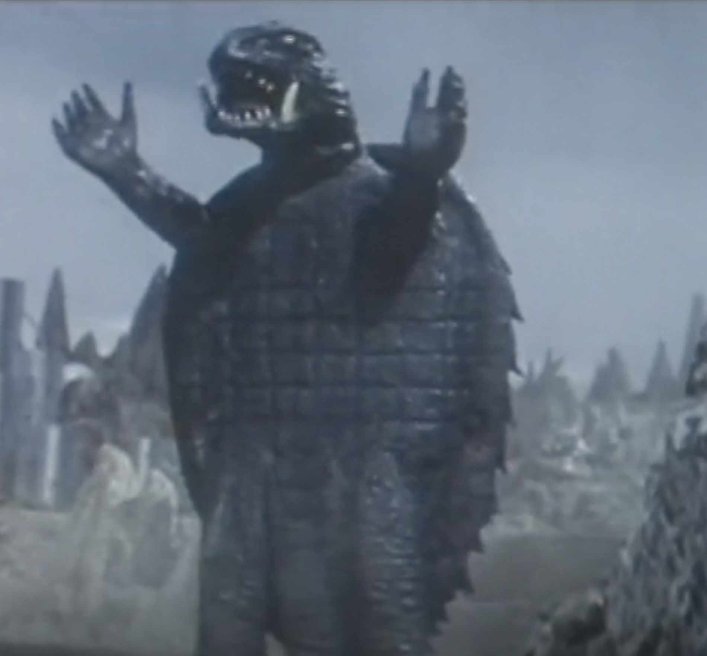
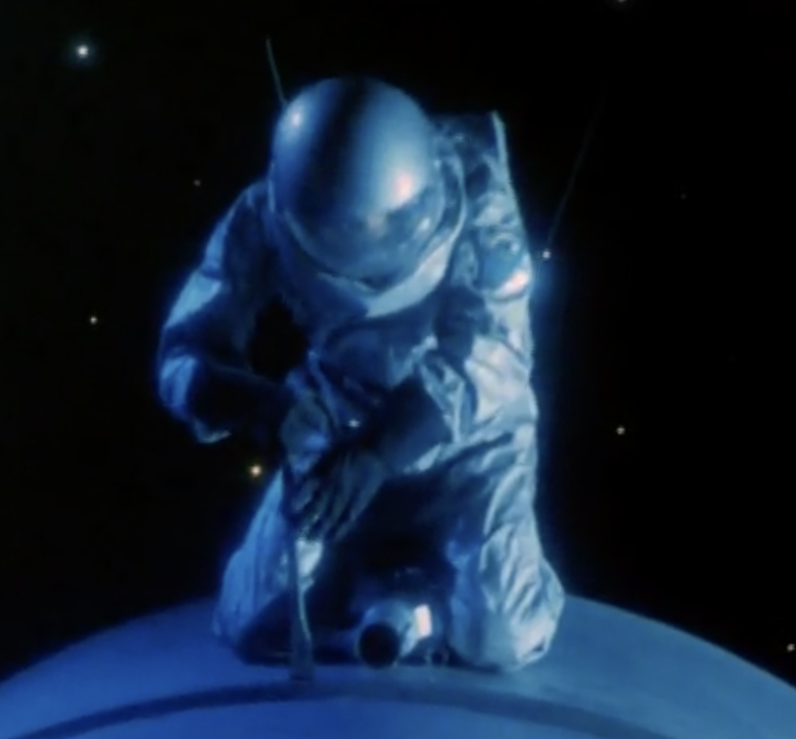
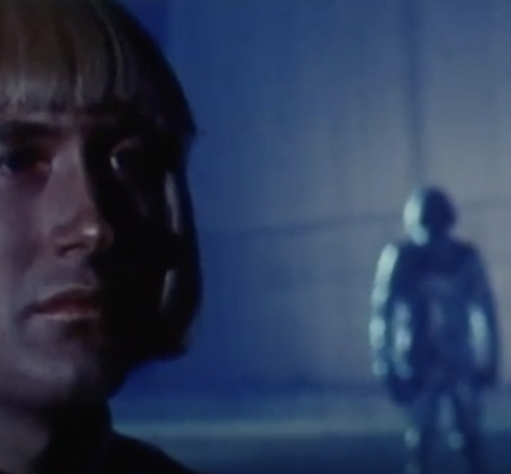
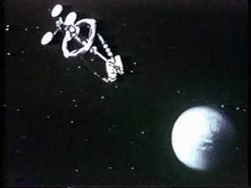

ALIENS

A resource for
'public domain'
films featuring aliens and other space oddities.
Index
Title
Year

Killers from Space
1954

Battle Beyond the Sun
1959

Attack of the Monsters
1969

The Doomsday Machine
1972

The War of the Robots
1978

This is the LANDING PAGE
This is the film
'Killers from Space'
by
'W. Lee Wilder'
, released in 1954.
Portrait of Lee Krasner, 1953. Photo by Tony Vaccaro/Hulton Archive/Getty Images.
This is the film
'Battle Beyond the Sun'
by
'Mikhail Karyukov'
, released in 1959.
Portrait of Lee Krasner, 1953. Photo by Tony Vaccaro/Hulton Archive/Getty Images.
This is the film
'Attack of the Monsters'
by
'Noriaki Yuasa'
, released in 1969.
Portrait of Lee Krasner, 1953. Photo by Tony Vaccaro/Hulton Archive/Getty Images.
This is the film
'The Doomsday Machine'
by
'Herbert J. Leder'
, released in 1972.
Portrait of Lee Krasner, 1953. Photo by Tony Vaccaro/Hulton Archive/Getty Images.
This is the film
'The War of the Robots'
by
'Alfonso Brescia'
, released in 1978.
Portrait of Lee Krasner, 1953. Photo by Tony Vaccaro/Hulton Archive/Getty Images.